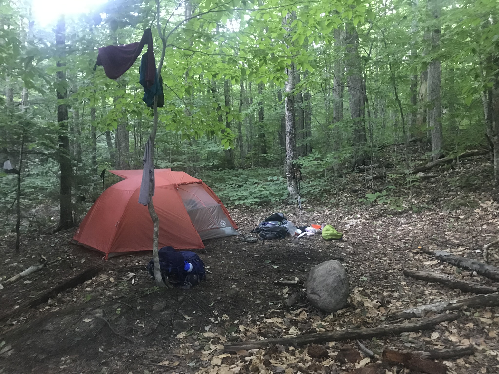
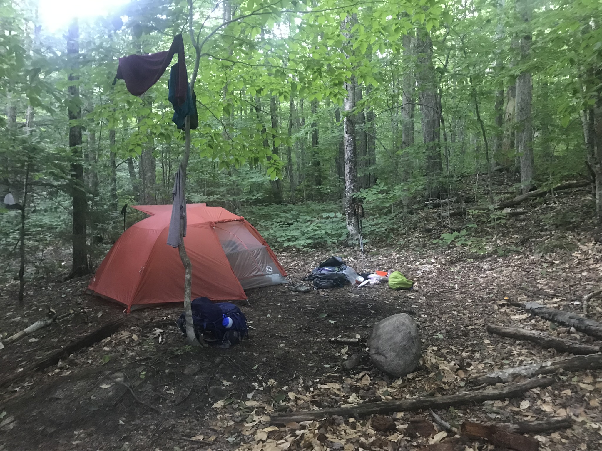

Distance
Distance Elevation
Elevation Observed Wildlife
Observed Wildlifeto
This one-night backpack brought my partner and I through some spectacuar woods, cool geologic formations, a gorgeous approach to the summit and an amazing southwest facing vista. Be warned, this hike is significantly more challenging than its stats suggest.
.jpg)

My partner and I set off to hike Mount Paugus along a scenic route on our first day and then to summit Mount Chocorua during our second day. The first day took much longer than anticipated and demanded more energy so we decided to take an easy route on our second morning and save Chocorua for another day.
We started the hike on gentle Bolles Trail. The beginnin of our hike involved a gentle grade and more than a few stream crossings that involved some engaging rock hopping. We each got our feet a little more damp than desired but enjoyed the beauty the streams of the White Mountains provide. We arrived at Big Rock Trail, dropped our packs, carefully crossed Whittin Brook, and made our short and steep way to Big Rock Cave. Thre are some truly giant rocks here and a couple interesting caves to explore. There are a couple opportunities to climb up atop the rocks but it requires a bit of daring and agility. Up there you can get a few peaks of the surrounding forest. My partner and I found a nice sitting spot and enjoyed a nice snack. We had plenty of hike to go.
The trail continued though some enchanting woods and reached our first real incline of the day as we ascended Whitin Ridge. One the climb began the terrain changed to a hemlock grove scattered with fallen timber. Upon reaching the intersection with Cabin Trail we met three members of the Wonalancet Out Doors Club. They were taking a break from some trail maintenance showed off their beautiful map of the region. They happened to be carrying a few extra and succeeded in selling us one. My partner and I had been looking for a cool map to hang on a wall in our home and this was the one. How can you pass up the opportunity to buy a locally made map while hiking in the very wilderness it displays? I enjoyed looking at all the intricacies of the region during the breaks for the rest of our hike.
We took our second real break just before reaching Lawrence Trail to gear up for the rapid elevation gain up Mount Paugus. The trail itself was probably the most scenic ascent of a mountain I have experienced in New England. The hardwoods quickly gave way to evergreens that were a delightful mix of towering trees to provide a canopy and bright saplings to give color to our line of sight while trodding. In addition, the trail provided extensive switchbacks, a rare find in the White and a welcome sight as we carried the extra weight on our backs. As we approached the highest point of our hike we were offered the occasional glimpse through the tees of the surrounding area to the west and to the south including the close and daunting Passaconaway.


Eventually the steepness gave way to the plateau of Mount Paugus, but the highest point of our hike still remained annoyingly ahead of us. Luckily the alpine trail offered lovely streams and calming forests. Eventually we made it to a large clearing. We were initially disappointed because it seemed that there were only slight views through the tops of some trees. After we were halfway through our lunch I luckily spotted a narrow trail leading down toward a much more open vista where we enjoyed wide open views to the south and west. We relished in the gorgeous views, mountain breese and tasty “charcuterie board.”

Then began by far the trickiest part of the hike. Thank goodness for Matt Hield and his AMC book as well as Phillip Werner of SectionHiker.com for their warnings about his descent. I wna’t try to describe the intricacies, but it is steep and technical with some parts requiring extra attention to trail finding. My partner and I were successful in staying on the trail and occasionally checked all trails to make sure of it. We packed away our poles since our hands were better put to use grabbing trees, roots, and assisting in shameless butt slides down multiple parts of rapid descent down steep slick rock. We took out our poles when we reached Bee Line Trail but the trail remained almost as steep. All-in-all our 1.7 mile descent took us two full hours. At least we were treated to a few vistas facing east toward the cone of Chocorua and beyond.
We finally reached the loud babbling of Paugus Brook. Rock hopping did not seem possible so I gladly removed my boots for the day and slid into my trusty Crocs. After the easy ford we set up our new tent, pad, and bag set up a short walk from the clear stream. The chilly stream was more than refreshing as we rinsed off the grime of a day’s hike. Laying in our hammock along the calming brook never felt better. It only took a short discussion to decide our dream of summiting Chocorua would have to wait for another trip. Tomorrow would only involve a short exit hike along Bolles Trail.
 


Our morning was a purposefully slow one. We spend most of it reading and napping in our brookside hammock while enjoying hot coffee and oatmeal. We eventually made our way down Bolles Trail and back to our car in less than 45 minutes. On the drive out we stopped at the southern tip of Lake Chocorua, changed into our swim trunks and bathed in cool lake water and picturesque view of Mount Chocorua. I strongly recommend anyone do the same upon the completion of nearby hikes.